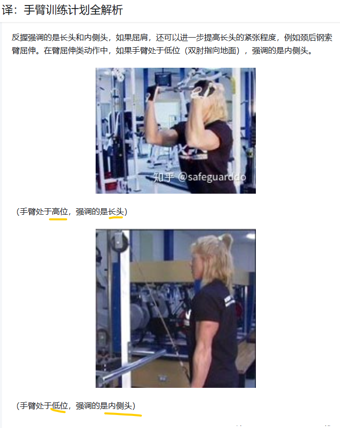
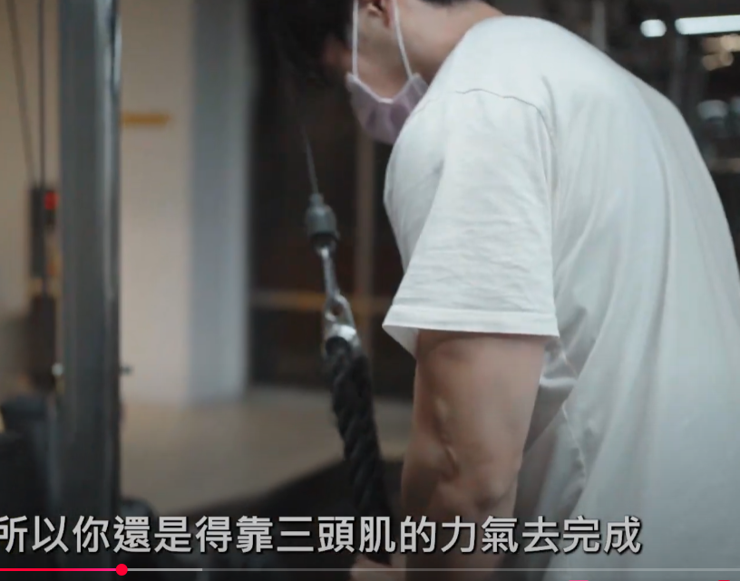
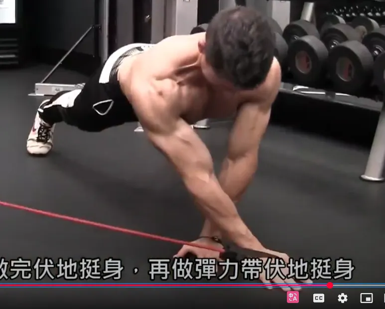

1 Triceps2 行
外侧头和内侧头很难分开激活，所以分成两组：长头，外侧和内侧头

2 肌肉类型1 行
Type II > Type I ，所以适合大重量激活，而窄距平板卧推显然更容易加重
3 exercise7 行
三头肌很容易确定 两个动作一个过顶，一个不过顶：哑铃 or cable臂屈伸，绳索下压
cable 优点：移动度好，对手肘好；移动轨迹长让肌肉更长的收缩

- 窄距平板卧推
- 3x6-8
- 不要过窄，对肩部压力太大
- triceps适合大重量激活刺激type II，而窄距平板卧推显然更容易加重
- overhead cable extension 头上绳索臂屈伸
- 长头
- 3x8-12
- triceps cable pulldown 绳索下压
- 3x8-12
- 针对外侧头和内侧头
- 正握反握没区别
- 俯卧撑，dips 作为结束动作——这两个动作缺点：对关节都有很大的压力，所以适量
4 Summary3 行
- 哑铃上斜
- 文思吉龙达双杠
- ~~卧推~~——自己非常不适应——跟胳膊长应该有关系，绝对不做，除非 空杆的史密斯 爆发力 脱手 卧推
5 关于卧推 thib 西部杠铃等人的计划4 行
- 由于力量举的历史，这些人把卧推当作upper body的核心，而mma不需要这些，自己也不喜欢
- vince Gironda时期也是以身体美感作为目标，而不是绝对的块头
- 上体推类确实非常重要，考虑到自己工作压力很大了，不需要健身房太大的压力，而卧推对手腕，肩膀的压力非常大，自己的胳膊长，卧推轨道长，导致也非常不舒服
- 胸肌动作以俯卧撑(weighted) 哑铃incline press、dip、Vince Gironda ——哑铃incline press可以，但是杠铃incline press，因我对肩部压力依然非常大
6 upper press 相关三个肌肉5 行
- chest——俯卧撑(weighted) 哑铃incline press、dip、Vince Gironda dip
- 肱三头肌——
- 三角肌前束——push press 借力推举，thib 非常推荐，这也是唯一动作
只有chest是大肌群，每节课至少要有一个动作，其它两个不需要每次都练到
不需要硕大的胸部，街头健身的胸肌酒足够了
7 为什么 chest , 三角肌，肱三头肌放一起4 行
- 都属于上体推类
- thib ， jim 把这些都放在一起，确实考虑到训练经济性也应该放在一起
- 上体press 大肌群是 chest，主要也要练习他，其他事辅助动作
- 现在，至于辅助训练，你必须分析一下卧推，看看哪些肌肉将会帮助你取得提高。起主要作用的肌肉是胸部，肩部和肱三头肌。起次要作用的肌肉是背阔肌，上背部和肱二头肌。现在，由于我是训练经济性的支持者，我只选择最有效的训练动作。——血与镁粉
8 双杠臂屈伸5 行
双杠臂屈伸——兼顾负重和不负重的动作。我很重视这个动作，我感觉它是我尝试过的最佳上肢动作之一——血与镁粉
对于发展胸部dip 超过 卧推——thib
9 卧推辅助动作——血与镁粉10 行
- 双杠臂屈伸
- 站姿推举——换成借力推举
- 哑铃卧推
- 负重俯卧撑
- Face pull（图片见血与镁粉之一）和俯身侧平举都是好动作，但难以使用大重量，这就使得它们更接近于补充性训练和结构整体性训练。 千万不要试图做极限重量的face pull，或者使用80磅的哑铃做俯身侧平举。不要。
- 为提高卧推重量而发展上背部——注意前提，我发现划船的一些变化动作最有效。我喜欢正手和反手引体向上（我一直坚持练习），但只有划船才能够有效地帮助你提高卧推重量。诀窍是，划船时，向着身体较高的位置拉起杠铃，双肘稍微张开。不要向着腹部拉起杠铃。我推荐俯身划船，哑铃划船，以及TC（译注：教练，TMUSCLE网站编辑）最喜欢的动作——T杠划船。
- 至于肱二头肌——练习杠铃弯举。这里没有什么革命性的发现。你只需要像老虎一样用力做就可以了。
- 总之——身体前部要强壮有力，身体后部围度要大，要稳固。
Push
thib 一年训练卧推不超过三个月
10 计划10 行
10.1 胸部动作3 行
- 杠铃哑铃上斜
- 单手双手cable crossover
- 蝴蝶机
10.2 Triceps5 行
- 练习哑铃，直至单手10kg再用ez 或者 t杠
- cable bar overhead
- 杠铃平板
- cable 下压
- 哑铃平板，单手坐姿
11 eugene teo1 行
- Smith 上斜卧推
12 白天手術房晚上健身房6 行
12.1 胸部只推荐两个动作2 行
- bb卧推
- 哑铃卧推（平板或上斜）
12.2 肱三头肌2 行
- 窄距卧推
- 滑轮三头肌下压(与伸展)
13 Thib20 行
| 类别 | Primary | Secondary | Auxiliary | Remedial |
|---|---|---|---|---|
| 胸肌 | 下斜卧推，卧推，吉龙达双杠臂屈伸 | 上斜卧推，哑铃卧推，哑铃上斜卧推，对颈卧推 | 钢索夹胸，飞鸟及其变化动作，蝴蝶机，坐姿推胸机 | 健身球俯卧撑，晃板俯卧撑 |
| 肩部 | 肌肉挺举，（站姿杠铃）肩上推举，借力推举，坐姿杠铃肩上推举 | 坐姿及站姿哑铃肩上推举及其变化动作，阿诺德推举，斯科特/Thib推举，肌肉抓举 | 机器肩上推举，侧平举及其变化动作，前平举及其变化动作，侧平举机 | 古巴推举，肩外旋 |
| 肱三头肌 | 窄握卧推，窄握下斜握推，体后臂屈伸 | 窄握上斜卧推，反握卧推，JM卧推，下斜杠铃臂屈伸，下斜哑铃臂屈伸，平板杠铃臂屈伸，平板哑铃臂屈伸 | 颈后哑铃臂屈伸，颈后杠铃臂屈伸，颈后钢索臂屈伸及其变化动作，臂屈伸机 | 健身球窄握俯卧撑，晃板窄握俯卧撑 |
14 盖伊三人组：一个动作6 行
chest：哑铃卧推、哑铃卧推、上斜哑铃卧推、
三头肌： cable 下拉，cable w杠下拉—— cable下拉真的是门槛非常非常低，非常容易上手，没有教练说的那么难；直杠或者w杠对肩膀和手腕友好，我的肩膀稳定度不好。
15 Athlean-X6 行
15.1 chest2 行
best：杠铃和哑铃卧推
almost best：Heavy 1 arm crossovers（越过中线，否则不是crossover），30 degree incline press
15.2 triceps2 行
best：Lying tricep extension——ez bar or db
almost best：tricep kickback, incline db powerdombs，cable pushdown
16 Inside the Muscles: Best Chest and Triceps Exercises9 行
by Bret Contreras
Based on the results of this experiment, I bet the following would be one kick-ass workout that'd target the upper, mid, and lower pecs as well as the triceps. Enjoy! 根据这次实验的结果，我敢打赌，下面的训练计划一定会非常有效，不仅能锻炼到上、中、下胸肌，还能锻炼到肱三头肌。好好享受吧！
- Guillotine Press or Dumbbell Bench Press 断头台卧推或哑铃卧推
- Dumbbell Incline Press or Mid-Pulley Crossover 哑铃上斜卧推或中滑轮交叉训练
- Weighted Dip or Fly 负重双杠臂屈伸或飞鸟
- Rope Extension or Cable Extension ——三头肌 绳索下压或缆绳下压
DB press, DB incline press, cable Crossover, Rope Extension or Cable Extension
17 The Best & Worst Chest Exercises14 行
by Jeff Nippard

| S+ | 平板卧推器械 |
| S | 第二个是cable 蝴蝶机，总之是自制的器械，不用关心。 S的第一个动作之所以是空白，是因为移动到上面去了 |
| A | 哑铃和杠铃上斜与平板卧推（~~没有下斜~~），钢索，蝴蝶机，cable crossover, cable press around |
对我来说现在以及未来用的是
- 杠铃上斜卧推，哑铃上斜卧推——杠铃关节受限，但是稳定性好于哑铃，看个人感觉练习
- cable crossover, cable press around ——单臂和双臂钢索夹胸
- 蝴蝶机——蝴蝶机的问题是需要肱二头肌，我目前不适合。
- ~~S+的平板卧推器械很少见~~
18 The Best & Worst TRICEPS Exercises6 行

在肱三头肌练习中，bar 版本都要高于rope版本一个等级
S 的两个动作是一个是cable，一个是平板，如果cable被占用，
A：1 Arm DB overhead extension，哑铃平板屈伸——类似S级别的杠铃版本

